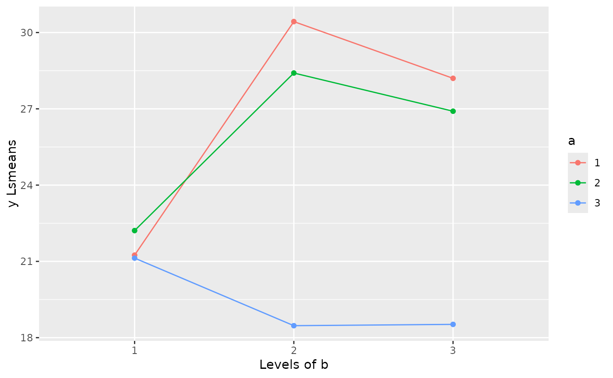

Example 8.2 from Generalized Linear Mixed Models: Modern Concepts, Methods and Applications by Walter W. Stroup (p-252)
Source:R/Exam8.2.R
Exam8.2.RdExam8.2 Incomplete strip-plot
References
Stroup, W. W. (2012). Generalized Linear Mixed Models: Modern Concepts, Methods and Applications. CRC Press.
Author
Muhammad Yaseen (myaseen208@gmail.com)
Adeela Munawar (adeela.uaf@gmail.com)
Examples
data(DataSet8.2)
DataSet8.2$block <- factor(x = DataSet8.2$block)
DataSet8.2$a <- factor(x = DataSet8.2$a)
DataSet8.2$b <- factor(x = DataSet8.2$b)
library(lmerTest)
Exam8.2lmer <-
lmer(
formula = y ~ a*b + (1|block) + (1|block:a) + (1|block:b)
, data = DataSet8.2
)
anova(Exam8.2lmer,ddf="Kenward-Roger")
#> Type III Analysis of Variance Table with Kenward-Roger's method
#> Sum Sq Mean Sq NumDF DenDF F value Pr(>F)
#> a 29.712 14.8561 2 8.8426 6.6173 0.017504 *
#> b 10.435 5.2176 2 8.4720 2.3240 0.156808
#> a:b 94.718 23.6795 4 5.8536 10.5474 0.007533 **
#> ---
#> Signif. codes: 0 ‘***’ 0.001 ‘**’ 0.01 ‘*’ 0.05 ‘.’ 0.1 ‘ ’ 1
library(emmeans)
emmeans(object = Exam8.2lmer, specs = ~a|b)
#> b = 1:
#> a emmean SE df lower.CL upper.CL
#> 1 21.2 2.18 24.4 16.7 25.7
#> 2 22.2 2.18 24.4 17.7 26.7
#> 3 21.1 2.18 24.4 16.6 25.6
#>
#> b = 2:
#> a emmean SE df lower.CL upper.CL
#> 1 30.4 2.18 24.4 25.9 34.9
#> 2 28.4 2.18 24.4 23.9 32.9
#> 3 18.5 2.18 24.4 14.0 23.0
#>
#> b = 3:
#> a emmean SE df lower.CL upper.CL
#> 1 28.2 2.18 24.4 23.7 32.7
#> 2 26.9 2.18 24.4 22.4 31.4
#> 3 18.5 2.18 24.4 14.0 23.0
#>
#> Degrees-of-freedom method: kenward-roger
#> Confidence level used: 0.95
emmip(
object = emmeans(object = Exam8.2lmer, specs = ~a|b)
, formula = a~b
, ylab = "y Lsmeans"
, main = "Lsmeans for a*b"
)

##---Simple effect comparisons of a*b Least Squares Means by a ( page # 254)
emmeans(Exam8.2lmer, pairwise ~ b|a)
#> $emmeans
#> a = 1:
#> b emmean SE df lower.CL upper.CL
#> 1 21.2 2.18 24.4 16.7 25.7
#> 2 30.4 2.18 24.4 25.9 34.9
#> 3 28.2 2.18 24.4 23.7 32.7
#>
#> a = 2:
#> b emmean SE df lower.CL upper.CL
#> 1 22.2 2.18 24.4 17.7 26.7
#> 2 28.4 2.18 24.4 23.9 32.9
#> 3 26.9 2.18 24.4 22.4 31.4
#>
#> a = 3:
#> b emmean SE df lower.CL upper.CL
#> 1 21.1 2.18 24.4 16.6 25.6
#> 2 18.5 2.18 24.4 14.0 23.0
#> 3 18.5 2.18 24.4 14.0 23.0
#>
#> Degrees-of-freedom method: kenward-roger
#> Confidence level used: 0.95
#>
#> $contrasts
#> a = 1:
#> contrast estimate SE df t.ratio p.value
#> b1 - b2 -9.1852 2.34 12.9 -3.934 0.0046
#> b1 - b3 -6.9538 2.34 12.9 -2.978 0.0271
#> b2 - b3 2.2314 2.34 12.9 0.956 0.6164
#>
#> a = 2:
#> contrast estimate SE df t.ratio p.value
#> b1 - b2 -6.1962 2.34 12.9 -2.653 0.0491
#> b1 - b3 -4.6945 2.34 12.9 -2.010 0.1492
#> b2 - b3 1.5017 2.34 12.9 0.643 0.7994
#>
#> a = 3:
#> contrast estimate SE df t.ratio p.value
#> b1 - b2 2.6576 2.34 12.9 1.138 0.5089
#> b1 - b3 2.6063 2.34 12.9 1.116 0.5215
#> b2 - b3 -0.0513 2.34 12.9 -0.022 0.9997
#>
#> Degrees-of-freedom method: kenward-roger
#> P value adjustment: tukey method for comparing a family of 3 estimates
#>